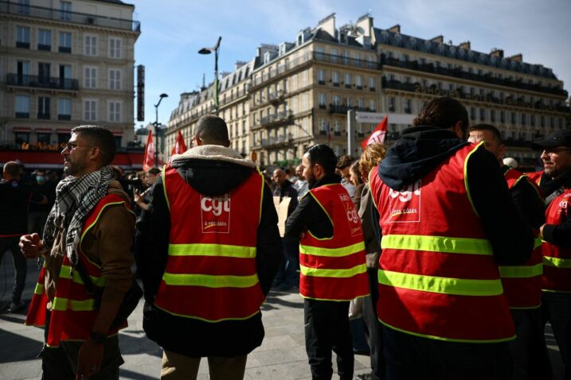
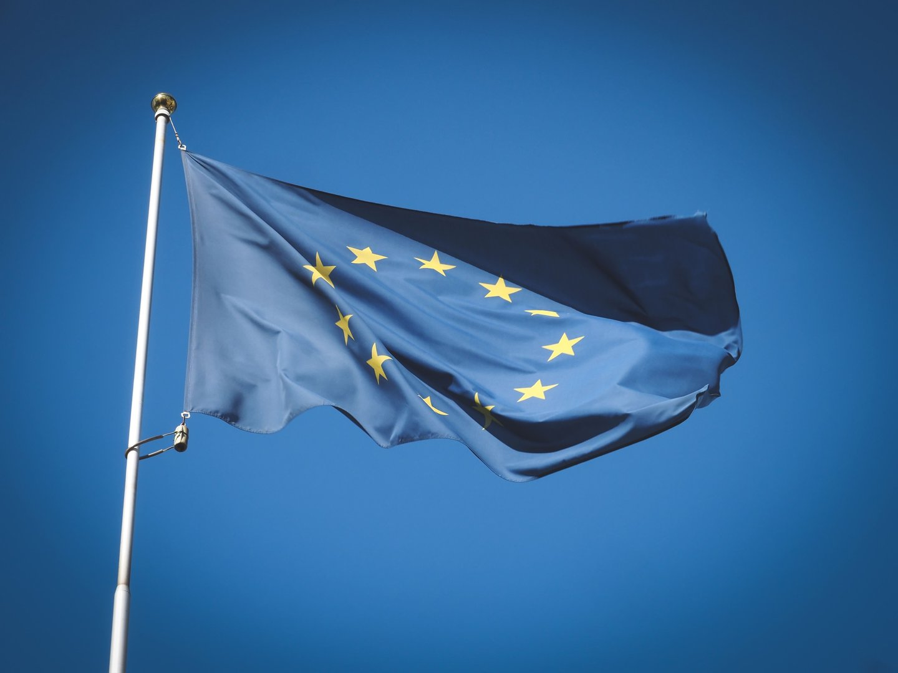
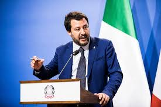
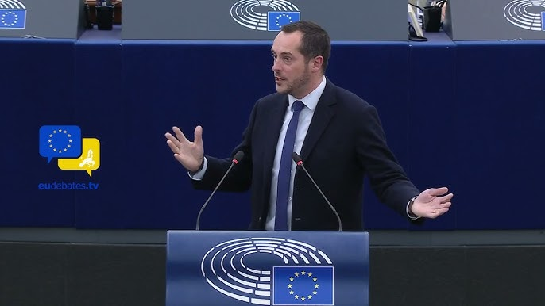
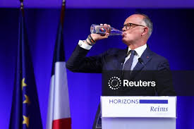

"Je vis sur la route, mais sans concert au bout" on a passé une journée avec Francis Lalanne, tête de liste "gilets jaunes" aux européennesÉLECTIONS EUROPÉENNES 2019

INFO FRANCEINFO. Européennes : les Républicains et le RN n'ont pas signé le plaidoyer de Transparency International pour la lutte contre la corruption
Italie: Matteo Salvini affaibli pour les européennes
"Nous avons une capacité à nous adresser à des Français qui viennent d'horizons Polyvalent", assure Nicolas Bay du Rassemblement national
80 km/h, PMA, chômage, européennes... Ce qu'il faut retenir de l'interview d'Édouard Philippe sur franceinfo